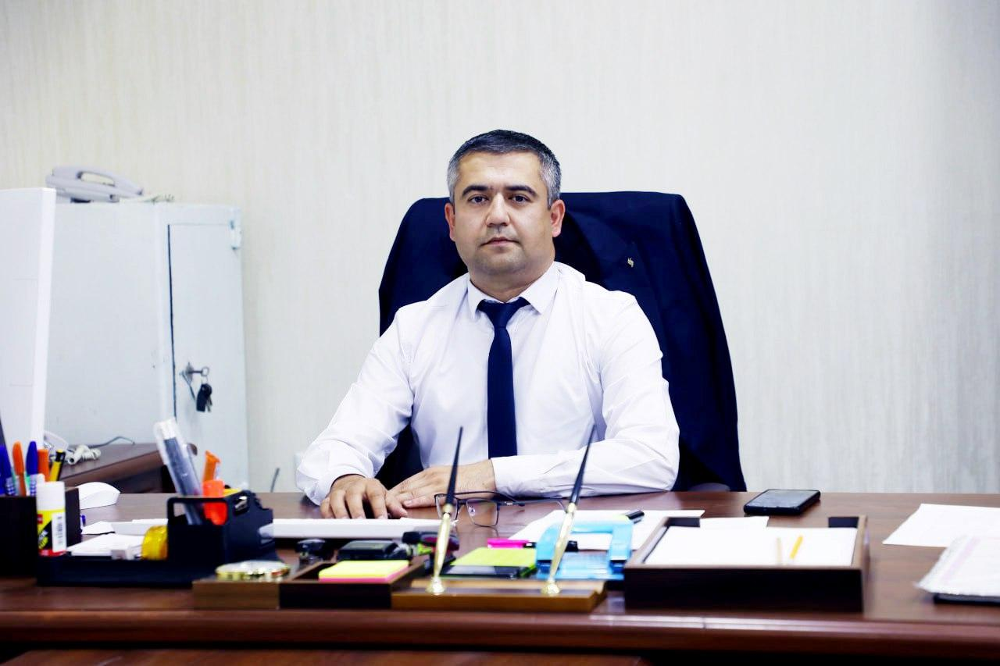
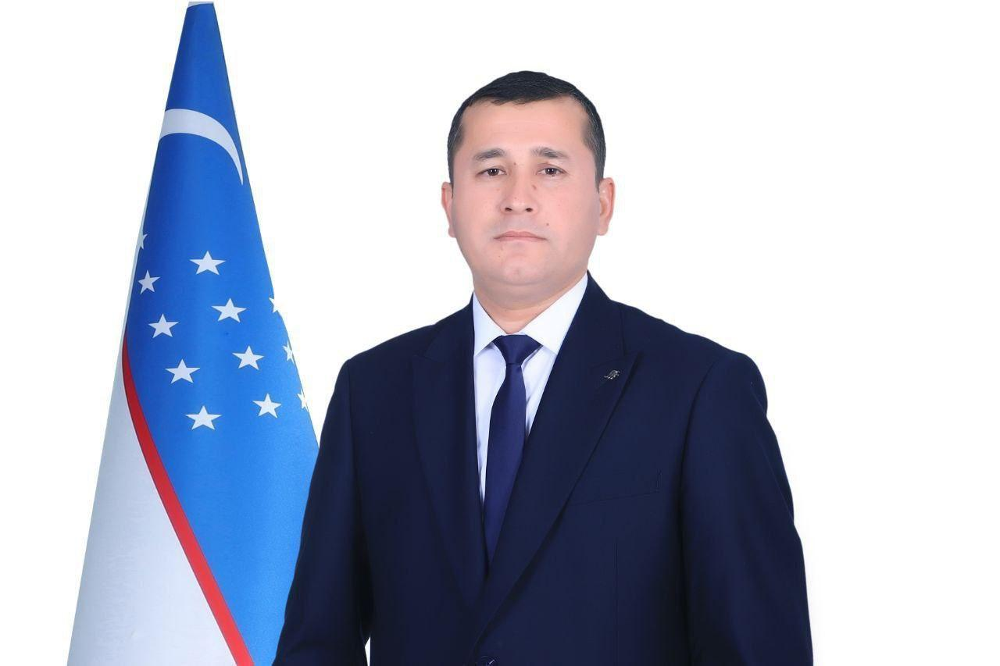
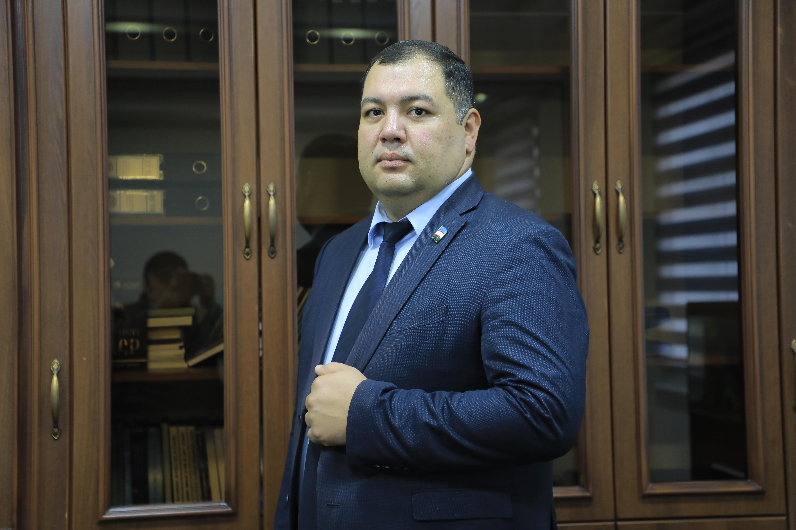

Dushanba - Shanba: 9:00 - 18:00
Rahbariyat
Jizzax viloyati pedagogik mahorat markazi direktori

02.04.2007 - 31.10.2007 yy. Jizzax Shahar 11-sonli Umumiy O`rta Ta`kim Maktabi da o'qituvchi bo'lib faoliyat yuritgan
23.11.2010 - 08.11.2018 yy. Jizzax Davlat Pedagogika Universiteti da o'qituvchi bo'lib faoliyat yuritgan
09.11.2018 - 06.08.2020 yy. Jizzax Davlat Pedagogika Universiteti da katta o'qituvchi bo'lib faoliyat yuritgan
07.08.2020 - 04.05.2021 yy. Jizzax Davlat Pedagogika Universiteti da kafedra mudiri bo'lib faoliyat yuritgan
05.05.2021 - 25.08.2022 yy. O‘zbekiston Respublikasi Oliy Ta’lim, Fan va Innovatsiyalar Vazirligi Huzuridagi Innavatsion rivojlanish vazirligi Jizzax viloyati hududiy boshqarmasida Ilmiy faoliyatni rivolantirish bo`yicha bosh mutaxassis lavozimida faoliyat yuritgan
05.09.2022 - 16.09.2024 yy. O‘zbekiston Respublikasi Maktabgacha va Maktab Taʼlimi Vazirligi Huzuridagi Ixtisoslashtirilgan Taʼlim Muassasalari Agentligi Tizimidagi Paxtakor Tuman Ixtisoslashtirilgan Maktabi da Direktor lavozimida faoliyat yuritgan
17.09.2024 dan boshlab Jizzax Viloyati Pedagogik Mahorat Markazi da Direktor lavozimida faoliyat yuritadi
Akademik faoliyat bo‘yicha direktor o‘rinbosari

02.07.2012 - 09.09.2016 yy. Jizzax Davlat Pedagogika Universiteti da Uslubchi bo'lib faoliyat yuritgan
10.09.2016 - 10.03.2018 yy. Jizzax Davlat Pedagogika Universiteti da bo`lim boshlig`i bo'lib faoliyat yuritgan
12.03.2018 - 31.03.2023 yy. O‘zbekiston Respublikasi Oliy Ta’lim, Fan va Innovatsiyalar Vazirligi Huzuridagi Bo`lim da Bosh mutaxassis bo`lib ishlagan
03.04.2023 - 18.07.2024 yy. Jizzax Viloyati Maktabgacha va Maktab Taʼlimi Boshqarmasi da Pedagoglarning bilimi hamda ko'nikmalarini baholash sho'basi bo`limida Bosh metodist bo`lib ishlagan
19.07.2024 - 18.10.2024 yy. Jizzax Viloyati Maktabgacha va Maktab Taʼlimi Boshqarmasi da Pedagoglarning bilimi va malakalarini baholashni tashkil etish sho'basi bo`limida Bosh metodist bo`lib ishlagan
05.09.2022 - 16.09.2024 yy. O‘zbekiston Respublikasi Maktabgacha va Maktab Taʼlimi Vazirligi Huzuridagi Ixtisoslashtirilgan Taʼlim Muassasalari Agentligi Tizimidagi Paxtakor Tuman Ixtisoslashtirilgan Maktabi da Direktor lavozimida faoliyat yuritgan
21.10.2024 dan boshlab Jizzax Viloyati Pedagogik Mahorat Markazi da Akademik faoliyat bo`yicha direktor o`rinbosari bo`lib faoliyat yuritadi
Pedagoglarni kasbiy rivojlantirish bo‘yicha direktor o‘rinbosari

04.02.2015 - 30.04.2023 yy. Jizzax Politexnika Instituti da Assistent bo'lib faoliyat yuritgan
01.05.2023 - 11.10.2023 yy. Jizzax Politexnika Instituti da Dotsent bo'lib faoliyat yuritgan
12.10.2023 yy. Jizzax Politexnika Instituti da Dotsent bo'lib faoliyat yuritgan
12.10.2023 dan boshlab Jizzax Politexnika Instituti Ijtimoiy fanlar kafedrasi da Dotsent bo'lib faoliyat yuritmoqda
01.11.2024 dan boshlab Jizzax Viloyati Pedagogik Mahorat Markazi da Pedagoglarni kasbiy rivojlantirish bo`yicha direktor o`rinbosari bo`lib faoliyat yuritmoqda